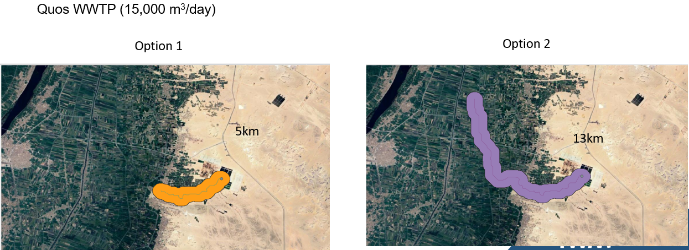
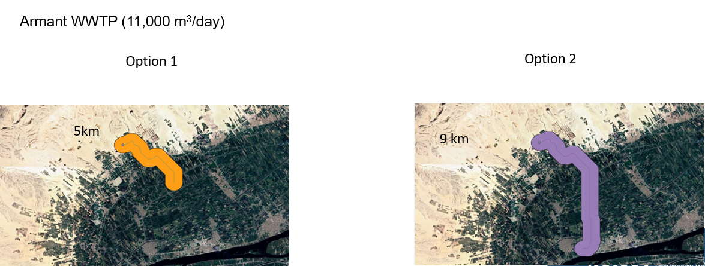
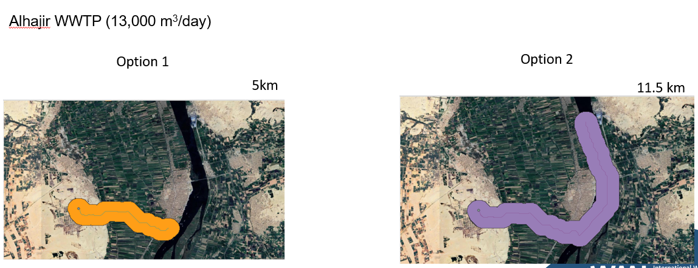
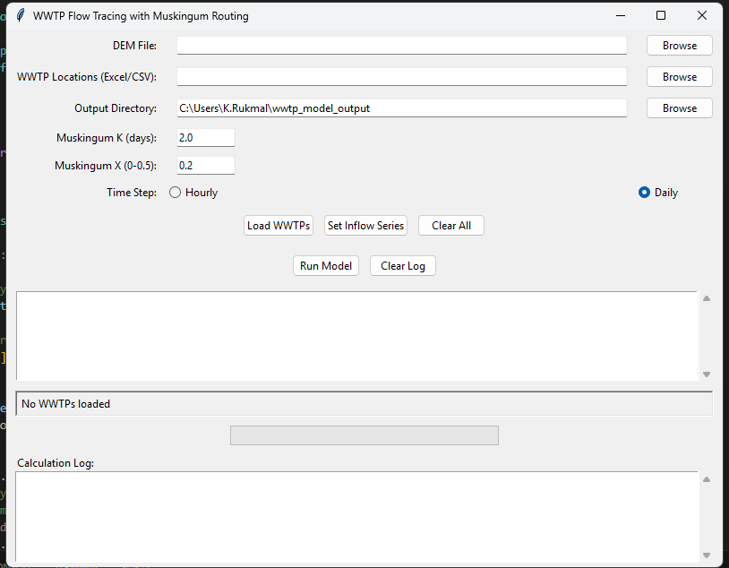

Overview
This tool allows hydrologists and researchers to delineate command areas from DEM for wastewater treatment plants (WWTPs). The command area represents the geographical extent influenced by treated water discharge, where wastewater can be distributed for reuse.
The delineation considers key factors including:
- Topography and hydrological flow paths
- Losses due to evaporation and infiltration
- Plant capacity and distribution networks
- Local water demand and economic constraints
The command area is defined using:
- Upstream: A 5 km radius around the WWTP, stopping at elevations 50 m higher than the WWTP elevation
- Downstream: A 500 m buffer zone around detected flow paths
- The union of these areas forms the final command area
Features
- Two delineation methods with different flow path stopping criteria
- Interactive outlet (WWTP location) selection
- Automatic buffer creation around flow paths
- Elevation-based area filtering
- Visualization of command areas
Delineation Methods
Option 1: Fixed Length Method
- Uses D8 flow direction method to trace downstream path
- Fixed flow path length of 5 km
- 500m buffer around flow path
- Removes areas higher than WWTP elevation +50m
Option 2: Dynamic Discharge Method
- Flow path length varies based on discharge rate
- Considers infiltration and evaporation losses
- Stops when flow discharge (Q) < 2 cumecs
- Same buffer and elevation filtering as Option 1
Case Study Examples
Quos WWTP (15,000 m³/day)
Option 1: 5km | Option 2: 13km
Armant WWTP (11,000 m³/day)
Option 1: 5km | Option 2: 9km
Alhajir WWTP (13,000 m³/day)
Option 1: 5km | Option 2: 11.5km
Technologies Used
- Python
- PyQt for GUI
- GDAL for geospatial processing
- QGIS (logic reference)
- D8 flow direction algorithm
Documentation
Visualizations
